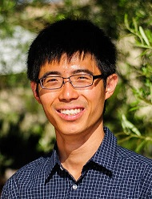

|  |
Yong Sheng SOH |
Computing and Mathematical Sciences
California Institute of Technology
CA 91125
|
Office: 334 Annenberg
Email: y s o h (at) caltech (dot) edu
|
|
I am a sixth year graduate student in the Applied and Computational Mathematics option at the California Institute of Technology. My advisor is Venkat Chandrasekaran.
I am broadly interested in optimization, signal processing, and sequential analysis. Specifically, I am interested in understanding the role that convex optimization (and convexity in general) plays in signal processing, as well as the limits that are involved in terms of statistical inference and computation. My most recent projects revolve the around the question of estimating a convex body from data-points.
I graduated from the University of Cambridge (UK) in 2011 with a BA in Mathematics. I worked as a Research Engineer at the Institute for Infocomm Research in the academic year of 2011 to 2012 under the supervision of Tony Quek, and also in collaboration with Marios Kountouris.
Journal Publications:
Y. S. Soh, V. Chandrasekaran, Learning Semidefinite Regularizers, Foundations of Computational Mathematics, January 2018, MATLAB code for replicating experiments, arXiv pre-print.
Y. S. Soh, V. Chandrasekaran, High-Dimensional Change-Point Estimation: Combining Filtering with Convex Optimization, Applied and Computational Harmonic Analysis, July 2017, arXiv preprint.
Y. S. Soh, T. Q. S. Quek, M. Kountouris, and H. Shin, Energy Efficient Heterogeneous Cellular Networks IEEE Journal on Selected Areas in Communications, April 2013.
Y. S. Soh, T. Q. S. Quek, M. Kountouris, and G. Caire, Cognitive Hybrid Division Duplex for Two-Tier Femtocell Networks, IEEE Transactions on Wireless Communications, September 2013.
Conference Proceedings:
Y. S. Soh, V. Chandrasekaran, High-Dimensional Change-Point Estimation: Combining Filtering with Convex Optimization, ISIT, Hong Kong, June 2015.
Y. S. Soh, T. Q. S. Quek, and M. Kountouris, Dynamic sleep mode strategies in energy efficient cellular networks, IEEE International Conference on Communications, Budapest, June 2013.
Y. S. Soh, T. Q. S. Quek, M. Kountouris, and G. Caire, Flexible duplex for cognitive femtocells in two-tier networks, Globecom, Anaheim, CA, December 2012.
T. Q. S. Quek, Y. S. Soh, and M. Kountouris, Hybrid division duplex for cognitive small cell networks, WPMC, Taipei, September 2012.
Teaching:
I was a teaching assistant in these courses.
Fall 2017: ACM 113 Introduction to Optimization
Fall 2016: ACM 113 Introduction to Optimization
Winter 2015: ACM/EE/CS 218 Statistical Inference
Winter 2014: ACM 113 Introduction to Optimization